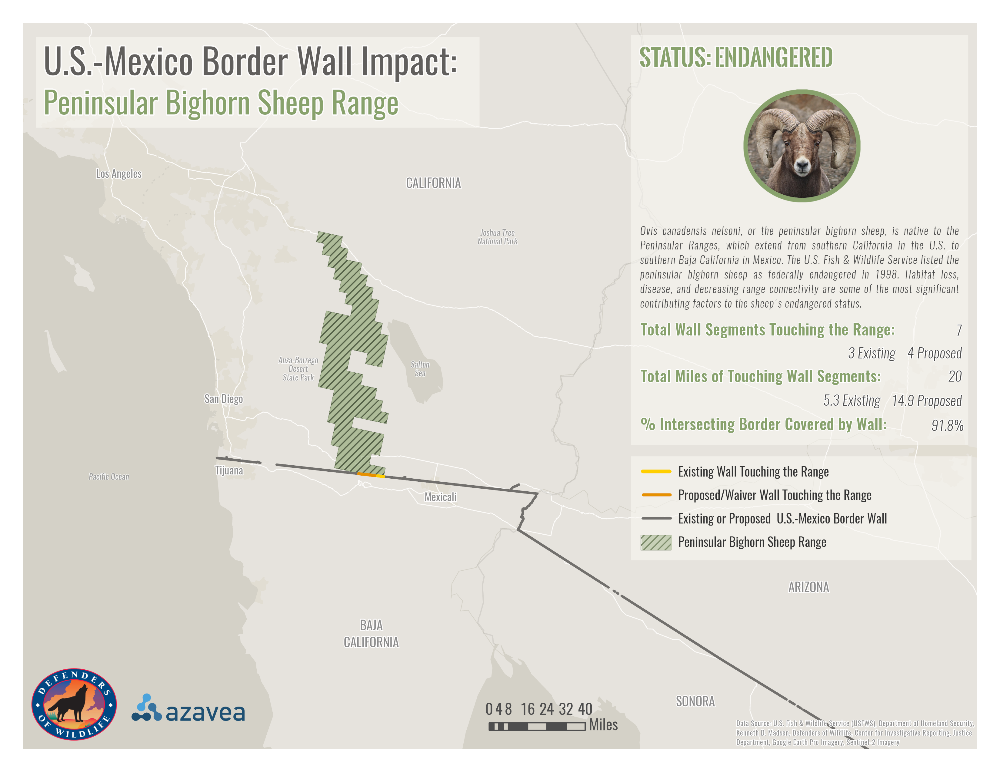
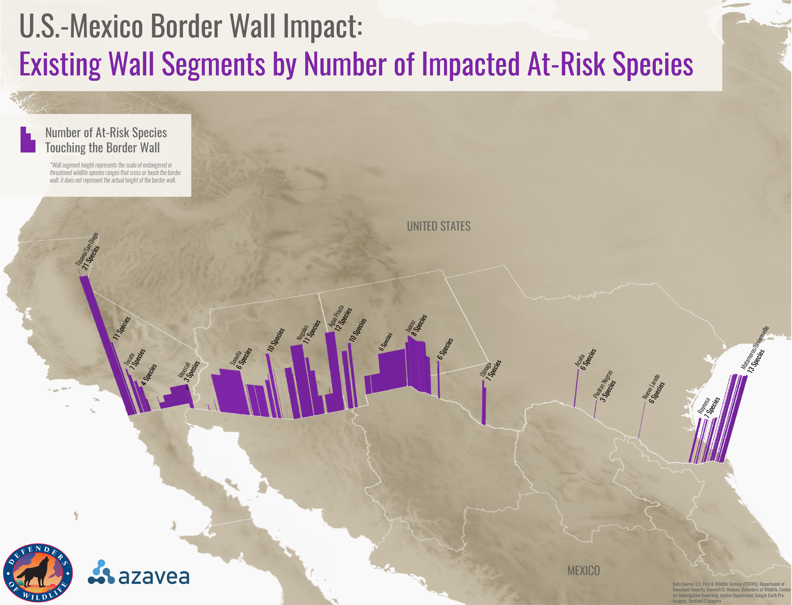
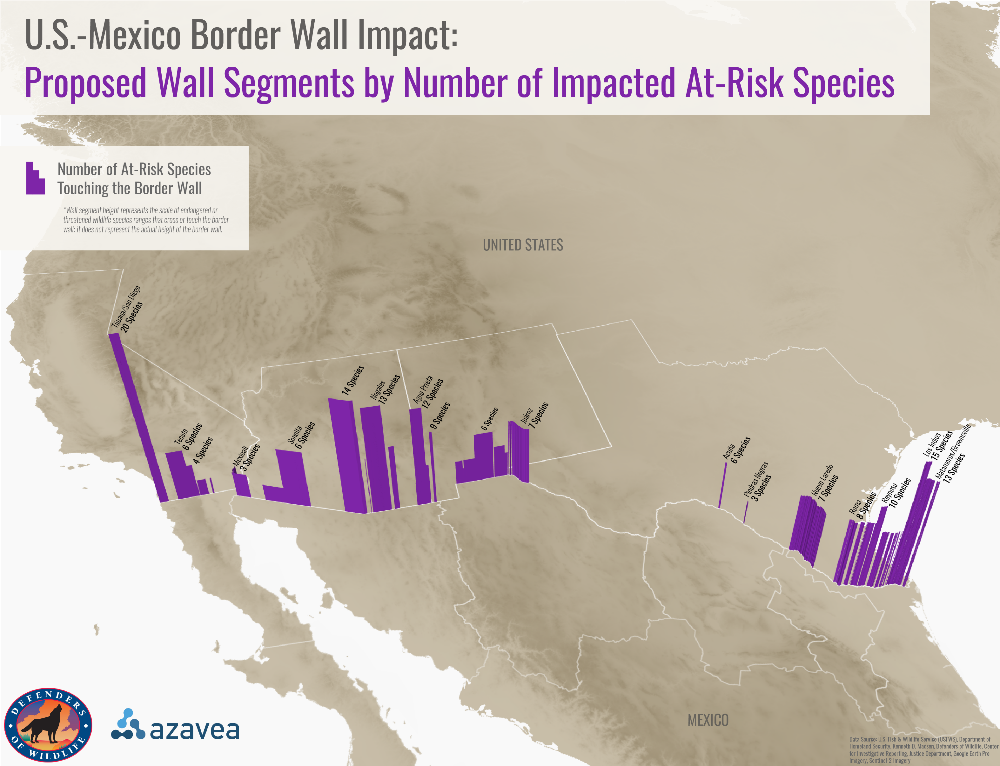
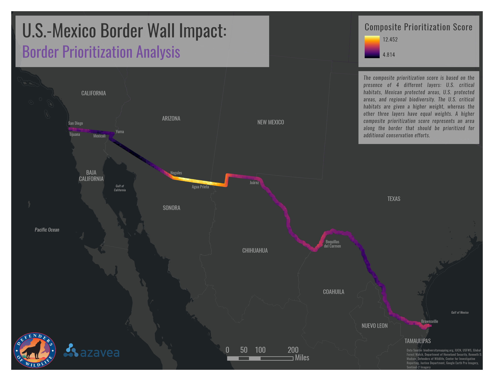

Monitoring Impacts of the U.S.-Mexico Border Wall on Endangered Wildlife

Defenders of Wildlife is a conservation organization whose mission is to protect and restore the habitats of imperiled North American wildlife. Since any legal obligations to conduct an environmental impact analysis for the construction of the U.S.-Mexico border wall were waived under the Trump administration, Defenders of Wildlife has been working to protect imperiled species impacted by the growing wall. The main components of the Defenders of Wildlife - Summer of Maps project are to:
1. analyze the existing and proposed border wall’s impact on threatened/endangered species and their habitats and to
2. determine which areas along the border should be prioritized for additional conservation efforts.
To determine which regions along the border should be prioritized, I conducted a weighted sum analysis using data on regional biodiversity, U.S. critical habitats, and protected areas on both the U.S. and Mexico sides of the border. The results indicate that the Sonoran Desert between Nogales, Arizona, U.S., and Agua Prieta, Sonora, Mexico should be prioritized due to high species richness and the presence of both critical habitats and protected areas.
Existing & Proposed Border Wall Impact

One portion of the project was to identify multiple endangered or threatened species directly affected by the U.S.-Mexico border wall construction. One map each was created for 7 diverse species to show the species' range, how the border wall impacts each species, and the amount of border wall intersecting each range.
ArcGIS Pro, Adobe Illustrator, and QGIS were used to design all maps for this project. I created the basemap in the map above to fit the project's theme and the non-profit's branding using ArcGIS Vector Tile Style Editor.


Another portion of the project included analyzing the number of threatened or endangered species intersecting each existing or proposed border wall segment (which was determined by the different waivers approving wall segments of varying length and geography). I created 2 3D maps (one for proposed wall segments and one for existing wall segments) to visualize the number of threatened and endangered species.
QGIS's Qgis2threejs plugin was used to style the border wall in 3D by an attribute, and Adobe Illustrator was used to design the map's other components.
Conservation Prioritization Analysis

The final portion of the project included determining which areas along the U.S.-Mexico border should be prioritized for increased conservation efforts. This prioritization score took into account the presence of U.S. critical habitats, Mexican protected areas, U.S. protected areas, and regional biodiversity. The U.S. critical habitats are given a higher weight, whereas the other three layers have equal weights. A higher composite prioritization score represents an area along the border that should be prioritized for additional conservation efforts. The weighted sum tool in ArcGIS Pro was used to measure prioritization for each pixel along the border.
get in touch
Thank you for stopping by! If you'd like to get in touch, please feel free to email me at the address below or send me a message on my LinkedIn.
Email Me
michelle.evelyn2@gmail.com